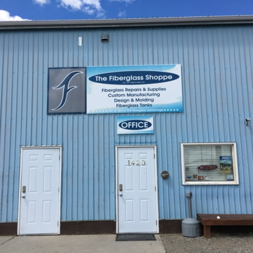
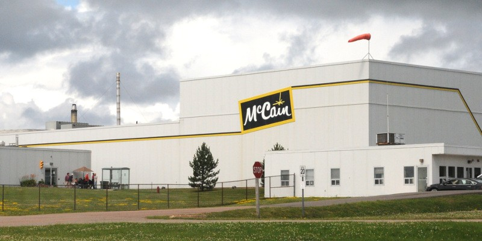

Small town charm only takes this place so far, however, and the business end of this place is really what keeps the gears turning. The major industries the town is involved in would have to include food processing, farming, as well as the manufacturing of many industrial goods. Being located just a few kilometers away from Lethbridge definitely helps boost growth here in town as well, as many more people live in Lethbridge than Coaldale yet still work here in town.
Trades workers such as electricians can find an apprenticeship at Live Electric at their shop across from K.C.’s Pub and Grill. Teens and other youth looking for work can definitely find work in the retail stores located on Mainstreet, as well as one of the many restaurants located all around town. The largest portion of money actually going towards the town’s infrastructure or people would have to come from income tax. It’s all worth it though because when you live here year-round, you get to experience some of the best events in the entire Lethbridge County!